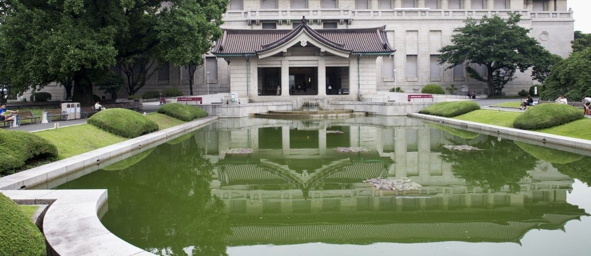
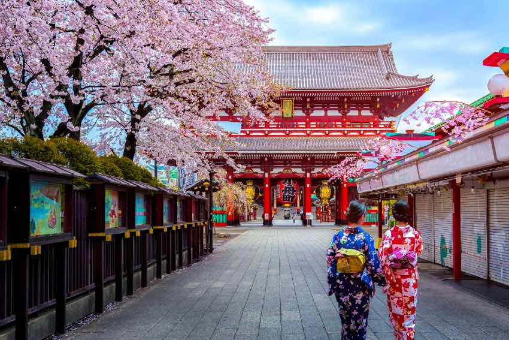
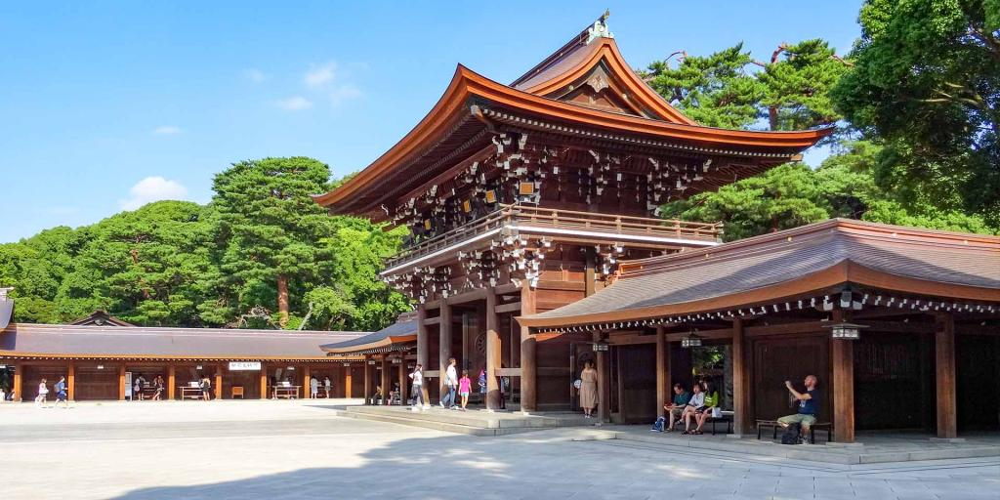
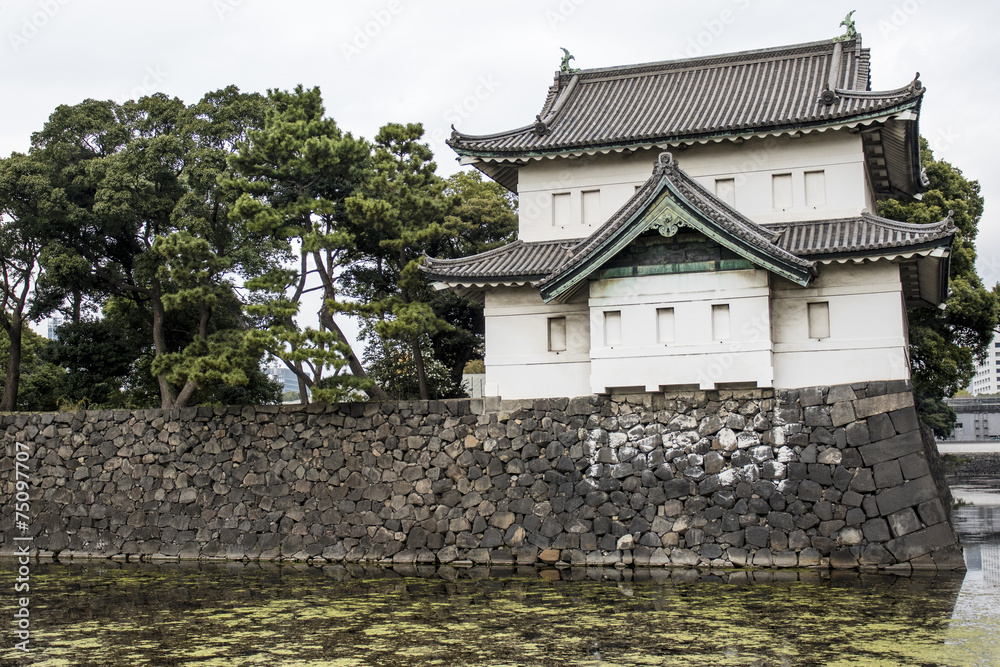
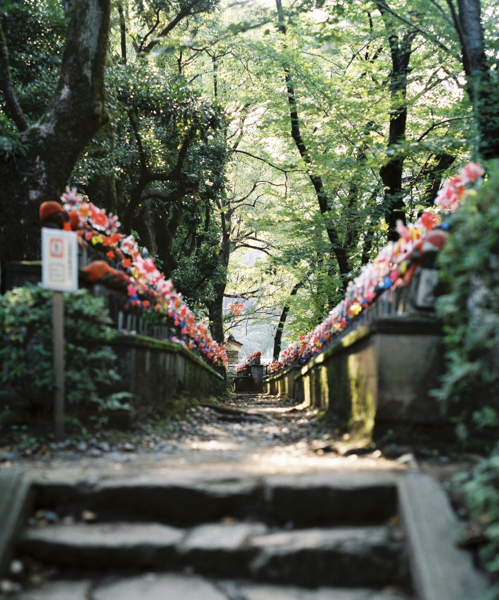

NACIONALNI MUZEJ JAPANA
Gledali ste na filmovima, čitali u mangama toliko toga o japanskim samurajima, gejšama, njihovim carevima, nindžama, junacima i velikanima. U Nacionalnom muzeju Japana ćete imati priliku sve to da vidite izbliza. Muzej je veoma dobro povezan prevozom, jer se nalazi u blizini metro stanice Ueno. Neće biti daleko od vas, gde god da se nalazite u Tokiju i jednostavno morate videti nešto ovako veličanstveno.
SENSOĐI HRAM
Sensođi (Sensō-ji) budistički hram predstavlja najstariji, najpoznatiji i najfotografisaniji hram u Japanu. Smešten je u Asakusi, oblast u Tokiju, izgrađen još davne 645. godine. Naravno, nije ostao u originalnom stanju za sve to vreme – prošao je kroz dosta rekonstrukcija i obnova, ali najveće njegovo rušenje vezuje se za Drugi svetski rat. Sadašnja građevina napravljena 1950. godine predstavlja repliku one iz XVII veka. Postoji jedna lepa legenda u vezi sa ovim hramom. Naime, dvojica braće ribara, Hinokuma Hamanari i Hinokuma Takenari, upecali su statuu boginje milosti, Kanon, u reci Sumida. Iako su statuu vratili nazad u reku ona bi konstantno isplovljavala nazad na površinu. Zato su se braća 628. godine odlučila da sagrade hram u njenu čast. Priča se da se statua boginje Kanon i dan danas nalazi u skrivenim građevinama hrama, koje niko od običnih posetilaca ne sme da vidi.
Ka hramu će vas voditi reka turista. Ulica do hrama koja je dugačka nekih 200 metara je verovatno mesto sa najvećim brojem suvenira. Ovde možete kupiti jeftina kimona, magnete, japanske tradicionalne lutke i tome slično.
HRAM MEIĐI
U Japanu su najrasprostranjenije dve religije: budizam i šinto. Ovde nema razmirica zbog drugačije vere, već one koegzistiraju u hramoniji i obe su po prirodi vrlo miroljubive. Hram Meiđi predstavlja šinto hram posvećen caru Meiđiju i njegovoj ženi, carici Šoken. Izgrađen je u njihovu čast, kao spomen njihovim dušama. Car Meiđi je umro 1912. godine, a njegova supruga dve godine kasnije. Gradnja hrama je završena 1920. godine. No, nažalost i ova građevina je osetila posledice Drugog svetskog rata – bila je sasvim uništena. Nakon toga je u potpunosti obnovljena 1958. godine i otvorena za posetu. I dan danas predstavlja jednu od najbitnijih religijskih mesta u Japanu.
CARSKA PALATA
Jedna od najpoznatijih atrakcija čitavog Japana jeste palata posvećena caru i njegovoj porodici. Izgrađena je 1603. godine. Smeštena je usred parka, u blizini kanala iznad koga je izgrađen mostić – takve slike carske palate ćete najčešće i naći na internetu. Zanimljiva je činjenica da se palata nije uvek nalazila u Tokiju. Naime, premeštena je iz Kjota u Tokio 1867. godine. Kao i mnoge kulturno-istorijske znamenitosti i Carska palata je u potpunosti uništena tokom Drugog svetskog rata. Sasvim je obnovljena 1968. godine i autentičnog je izgleda kao iz XIX veka.
TOKIO TORANJ
Jedna od najupečatljivijih znamenitosti u Tokiju jeste toranj. Primetićete da ova konstrukcija dosta podseća na Ajfelovu kulu i sličnost nije slučajna. Toranj u Tokiju je napravljen po uzoru na onaj u Parizu, 1958. godine. Sa svojih 332,5 metara spada u drugu najvišu građevinu u Japanu i najviši samostojeći toranj od gvožđa u svetu. Nalazi se u tokijskom kvartu Minato tj. u Šiba parku. Ofarban je u narandžasto i belo, da bi se ispoštovali bezbedonosni vazdušni propisi.

HRAM ZOĐOĐI
Hram Zođođi ima prilično zanimljivu istoriju i preporučujemo da se nađe na vašem spisku mesta, koje treba da obiđete prilikom boravka u Japanu. Izgrađen je krajem XIV veka i u prošlosti je predstavljao porodični hram porodice Tokugava, vladarima Edo perioda. Hram i dan danas ima svoju ulogu: predstavlja centar budističke sekte „Čista zemlja“. U XVII veku je izgrađena velelepna crvena kapija, kroz koju kada prođemo oslobađamo se najvećih ljudskih mana: pohlepe, gluposti i gneva. Ta čuvena kapija predstavlja najstariju drvenu građevinu u Tokiju. Prilikom Drugog svetskog rata, nekim čudom je samo ona ostala očuvana, dok je hram bio u potpunosti uništen. Kasnije je hram rekonstruisan i sada predstavlja poznatu turističku atrakciju. Pre raznih požara i bombardovanja, na zemljištu hrama se nalazilo 120 građevina, dok ih danas ima znatno manje. Najpoznatije rekonstruisane su Sungetatsumon (crvena kapija), mauzolej porodice Tokugava, Daiden, kao i groblje nerođene dece. Na ovom groblju Japanci su sahranjivali nerođenu decu, decu koja su rođena mrtva ili koja su umrla u ranom uzrastu. Umesto spomenika roditelji su stavljali lutke koje bi oblačili u šarena odela i ostavljali im igračke.
